Look at another screen, window or split pane and start typing. Eyeshift uses the webcam you already have to move focus there. No clicking, no extra hardware.
A free alternative to Glance Switch · MIT licence

I kept typing into the wrong Claude window with several open side by side. Now whichever one I'm looking at is the one that gets my keystrokes.
Everything you'd expect from a gaze focus switcher, and it keeps getting better the more you use it.
Turn toward another monitor and focus, and the pointer, move there.
Look at another window on the same screen and it comes forward, ready for typing.
iTerm2, Terminal, Ghostty, VS Code, Cursor, Zed, Xcode, JetBrains IDEs and more.
Never moves focus while you type, use the mouse, or glance down at your keyboard.
Every click and keystroke teaches it where you were looking. Wrong switch? Click where you meant and it nudges itself.
The built-in camera is enough. Add a second webcam on your other screen for extra accuracy there.
Frames are processed in memory with Apple's Vision framework and thrown away immediately. Nothing is recorded, saved or sent anywhere. No account, no analytics, no network.
The only free, open-source option that switches screens, windows and split panes with a plain webcam.
| Eyeshift | Glance Switch | Tobii eye trackers | macOS Head Pointer | AutoRaise | |
|---|---|---|---|---|---|
| Moves keyboard focus where you look | Yes | Yes | Needs extra software | Moves the pointer | Follows the mouse |
| Screens, windows and split panes | Yes | Yes | — | — | Windows only |
| Works with a normal webcam | Yes | Yes | Dedicated hardware | Yes | n/a |
| Free and open source | Yes, MIT | Paid | No | Built in | Yes |
| Learns from your clicks and typing | Yes | — | — | — | — |
One command with Homebrew, or a plain download. Then a short calibration and you're set.
# macOS 14+, Apple silicon or Intel
brew tap chaibreak/tap
brew trust --tap chaibreak/tap
brew install --cask eyeshift
open -a Eyeshift
No Homebrew? Download the zip, move Eyeshift to Applications, then right-click it and choose Open the first time.
The welcome guide walks you through both.
About 45 seconds per screen: follow a few dots.
⇧⌘G pauses any time.
Everything people ask before switching focus with their eyes.
Yes. Eyeshift is a free, open-source (MIT) Mac app that does the same job as Glance Switch: it uses your webcam to move keyboard focus to the screen, window or split pane you're looking at.
Install Eyeshift (brew install --cask eyeshift from the chaibreak/tap Homebrew tap, or download it from GitHub), allow camera and Accessibility access, and run the 45-second calibration. After that, turning toward another monitor moves keyboard focus and the mouse pointer to it automatically.
No. Eyeshift works with the built-in FaceTime camera or any USB webcam. You can add a second webcam on another screen for better accuracy there.
Yes. Eyeshift moves focus between split panes in iTerm2, Terminal, Ghostty, Warp, kitty, WezTerm, VS Code, Cursor, Windsurf, Zed, Sublime Text, Xcode, JetBrains IDEs and Android Studio.
No. Eyeshift never moves focus while you type, while you're using the mouse, or when you look down at your keyboard.
Yes. Frames are processed in memory on your Mac with Apple's Vision framework and discarded immediately. Nothing is recorded, saved or sent, and Eyeshift has no network access, account or analytics.
Good to about a thumbnail-sized area, which is plenty for picking a screen, window or pane. It is not precise enough to replace the mouse. Eyeshift keeps learning from your clicks and typing, so it gets more accurate over time.
Not yet. Eyeshift is a native macOS app for macOS 14 Sonoma and later, on Apple silicon and Intel Macs.